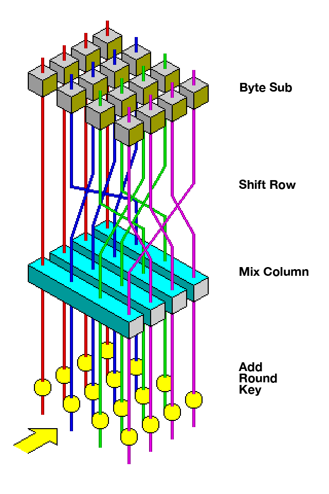

This article is an overview of all topics related to modern internet-era cryptography.
Cryptography — from the Greek kryptos, “hidden,” and graphein, “to write” — studies secure communication in the presence of adversaries. “Secure” can mean several different things:
- confidentiality: nobody except the intended recipient can read the message;
- integrity: modifications are detected;
- authentication: we know who created the message;
- forward secrecy: stealing a long-term key does not reveal old sessions.
These goals require different primitives. Encryption alone does not prove who sent a message, a checksum does not stop an attacker from replacing both the message and the checksum, and a digital signature does not hide anything.
This section explains how the pieces fit together, not how to implement a secure protocol. Cryptographic constructions are unusually sensitive to details, and real applications should use a maintained library and an established protocol.
#Asymmetric Cryptography
Asymmetric cryptography uses a pair of keys. The public key can be distributed freely; the private key remains secret. The exact roles depend on the scheme: a public key may encapsulate a secret or verify a signature, while the corresponding private key decapsulates or signs.
These schemes rely on computational asymmetry: evaluating some function is easy, while reversing it without secret information is believed to be infeasible. Integer multiplication and factorization provide one such asymmetry, and discrete logarithms provide another.
#RSA
RSA begins by choosing two independent, distinct large primes $p$ and $q$. Their product
$$ n=pq $$becomes part of both keys. Key generation then proceeds as follows:
- Compute $\lambda(n)=\operatorname{lcm}(p-1,q-1)$.
- Choose a public exponent $e$ such that $\gcd(e,\lambda(n))=1$; the common choice is $65537$.
- Compute the private exponent $d=e^{-1}\bmod \lambda(n)$ with the extended Euclidean algorithm.
- Publish $(e,n)$ and keep $(d,p,q)$ secret.
For an integer message $0\le m<n$, the textbook RSA operation computes
$$ c=m^e \bmod n $$ and reverses it as $$ m=c^d \bmod n. $$Because $ed\equiv1\pmod{\lambda(n)}$, raising to the power $ed$ returns the original residue modulo both $p$ and $q$, and therefore modulo $n$. Both directions are implemented with binary exponentiation and large-integer modular multiplication, often using Montgomery reduction.
Knowing the factorization of $n$ makes it easy to reconstruct $\lambda(n)$ and hence $d$. No efficient classical algorithm is known for factoring appropriately generated RSA moduli, although this is a computational assumption rather than a proof that every possible RSA attack must factor $n$.
The equations above are not a safe encryption protocol. Textbook RSA is deterministic and malleable: equal messages produce equal ciphertexts, and algebraic changes to a ciphertext cause related changes to the plaintext. Real RSA encryption first applies randomized OAEP encoding, and RSA signatures use an encoding such as PSS. These constructions are standardized in PKCS #1 and should be invoked through a cryptographic library rather than reimplemented.
#Digital Signatures
A digital signature is a separate public-key operation. A signer uses a private key to produce a signature, and anyone with the public key can verify it. A signature provides integrity and origin authentication but no confidentiality: the signed message remains visible.
Large messages are not signed by applying a raw RSA exponent to every block. A cryptographic hash function first commits to the complete message, and the signature scheme signs a carefully encoded digest together with context. The encoding and context matter: signing an unstructured hash with textbook RSA is not RSA-PSS, just as applying textbook RSA to a message is not RSA-OAEP.
The private key must remain private, but the public key must also be authentic. If an attacker can replace the public key, they can sign with their own private key and verify with the replacement.
#Diffie–Hellman Key Exchange
Public-key encryption is not the only way to establish a shared secret. In finite-field Diffie–Hellman, everyone agrees on a large prime $p$ and a generator $g$. Alice chooses a private $a$ and sends
$$ A=g^a\bmod p, $$ while Bob chooses a private $b$ and sends $$ B=g^b\bmod p. $$ They independently compute the same value: $$ B^a\equiv g^{ab}\equiv A^b\pmod p. $$An observer sees $g$, $p$, $A$, and $B$ but would need to solve a discrete-logarithm-related problem to recover the shared value. Modern protocols often use the analogous construction on elliptic curves because it provides smaller keys and faster operations for comparable classical security.
When both sides generate fresh ephemeral keys for every connection and erase them afterwards, compromise of a long-term signing key does not reveal previously established session keys. This is forward secrecy.
#Man in the Middle
Unauthenticated Diffie–Hellman has a fundamental problem. An active adversary can replace Alice’s public share on its way to Bob and replace Bob’s share on its way to Alice. Alice and Bob then establish two different secrets, both shared with the attacker, who can decrypt, modify, and re-encrypt every message.
The solution is not to hide the public shares but to authenticate the entire handshake. In certificate-based systems, a trusted authority signs a binding between an identity and a public key. The operating system or browser carries a set of trust anchors, validates the certificate chain and hostname, and then checks a signature over the handshake transcript. This turns key exchange into authenticated key exchange.
Modern TLS 1.3 follows this pattern: it normally establishes ephemeral (EC)DHE key material, authenticates the transcript with certificates and signatures, derives symmetric session keys, and protects application records with authenticated encryption. It does not use RSA to encrypt every record, and it removed static RSA key transport entirely.
Certificates move the trust problem rather than making it disappear. A compromised authority, stolen server key, incorrect hostname check, or user who clicks through a warning can still defeat the protocol.
#Symmetric Cryptography
Public-key operations are comparatively expensive and work on small structured inputs. Once two parties share a random session key, they switch to symmetric cryptography for bulk data.
The Advanced Encryption Standard (AES) is a block cipher: for a fixed key, it permutes 128-bit blocks. AES-128, AES-192, and AES-256 use keys of 128, 192, and 256 bits respectively.

AES is a substitution–permutation network. Most rounds combine several operations:
SubBytesapplies a non-linear substitution derived from inversion in $GF(2^8)$;ShiftRowsandMixColumnsspread local changes across the state;AddRoundKeyXORs in round-specific key material.
The final round omits MixColumns, and the number of rounds depends on the key size.
This alternates two classical design goals. Confusion makes the relationship between key bits and ciphertext complicated and non-linear. Diffusion spreads each input bit across many output bits, producing the avalanche effect after several rounds.
Many x86 and Arm processors provide dedicated AES instructions. They improve speed and also make it easier to avoid timing leakage from secret-indexed lookup tables, but “supported by hardware” does not make an arbitrary AES program secure.
#Modes and Authentication
A block cipher only transforms one fixed-size block. Applying it independently to every block — ECB mode — reveals repeated plaintext blocks as repeated ciphertext blocks. Other modes combine the primitive with a nonce, counter, or chaining state to hide these patterns.
Confidentiality is still not enough. An attacker who cannot read a ciphertext may nevertheless be able to modify it in a controlled way. Modern protocols therefore use authenticated encryption with associated data (AEAD), such as AES-GCM or ChaCha20-Poly1305. Encryption hides the plaintext, an authentication tag detects changes, and associated data can authenticate unencrypted headers.
Nonce rules are part of the algorithm, not optional advice. Reusing a nonce with the same key can reveal relationships between plaintexts and, for modes such as GCM, can also enable tag forgery. Protocols normally derive or count nonces so callers do not improvise them.
#Perfect Security
Almost all practical cryptography relies on computational assumptions: an attacker could in principle search the entire key space, but the required work is intended to be infeasible. Perfect secrecy is stronger — even an attacker with unlimited computation learns no information about the plaintext.
The one-time pad achieves perfect secrecy with
$$ c=m\mathbin\oplus k, $$provided that $k$ is uniformly random, at least as long as the message, kept secret, and never reused. When key and message have equal length, every possible plaintext has exactly one equally likely key that explains a given ciphertext.
These requirements are also why one-time pads are rarely practical. The parties must securely exchange as much random material as they will ever communicate. Historically, that sometimes meant couriers carrying literal pads of random symbols. Reusing a pad immediately leaks
$$ c_1\mathbin\oplus c_2=m_1\mathbin\oplus m_2, $$which exposes structure from both messages.
Computational cryptography trades this impossible key-distribution burden for assumptions about what an adversary can calculate.
#Quantum Computers
A sufficiently large fault-tolerant quantum computer running Shor’s algorithm could factor integers and solve the discrete logarithms underlying RSA, finite-field Diffie–Hellman, and elliptic-curve cryptography in polynomial time. Grover’s algorithm gives a more modest square-root improvement against symmetric key search, which can be compensated for with larger symmetric parameters.
This is why post-quantum systems use different assumptions. NIST standardized ML-KEM, ML-DSA, and SLH-DSA in 2024 for key establishment and signatures. Migration is a protocol and engineering problem as much as an algorithmic one: formats, certificates, implementations, and long-lived encrypted data all have to change safely.
#Cryptographic Protocols
Cryptographic primitives are building blocks, not complete protocols. A secure channel needs to negotiate algorithms, authenticate keys, derive independent subkeys, order messages, reject replays, construct nonces, handle errors, rotate keys, and define exactly which bytes are authenticated.
More advanced protocols can prove statements or jointly compute results without revealing their private inputs. Examples include:
- comparing two salaries without revealing either salary;
- shuffling a deck and playing poker without a trusted dealer;
- private set intersection;
- secure multi-party computation when some participants are malicious;
- zero-knowledge proofs that establish a fact without revealing its witness.
The mathematical construction is only one attack surface. Timing information, cache accesses, branch behavior, power consumption, electromagnetic leakage, and even sound can reveal secrets. Implementations use constant-time operations, blinding, strict input validation, and carefully audited memory handling to reduce these side channels.
The recurring lesson is that security comes from the complete composition. A strong primitive inside a protocol with an unauthenticated key, repeated nonce, distinguishable error, or leaked timing signal is still an insecure system.